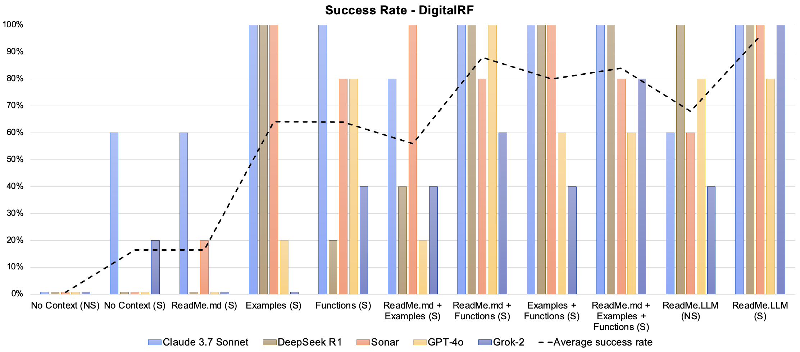

TL;DR
Problem: Nowadays, LLMs are becoming more and more widely used to write code. However, coding LLMs struggle with newer or lesser-known libraries due to limited online documentation and/or lack of representation in their training data.
Solution: We need LLM oriented documentation. ReadMe.LLM is a solution that addresses this issue by providing structured descriptions of the codebase and other metadata. Library developers provide ReadMe.LLM and engineers can use them by simply copy pasting its contents into their chat window along with their query.
Bridging the LLM Knowledge Gap
The Challenge
In the foreseen future, developers will use LLMs to generate most of the code, and even the developer itself will be an agent. To achieve better efficiency and reusability, libraries are always vital for high quality code. However, not every library is as popular as Pandas which has plenty of public documentation, Stack Overflow questions, and other resources that can be easily captured by LLMs. Newer or smaller libraries that target a niche domain often lack online documentation, making it difficult for LLMs to generate accurate code.
Real-World Examples: When LLMs Fail
This is not just a theoretical concern. We have conducted experiments without any context across multiple LLMs. The LLMs and libraries we tested, as well as the experiments progress, is introduced as below.
| LLM | Training Cutoff Date |
|---|---|
| GPT-4o | October 2023 |
| Sonar (Llama3 70B) | December 2023 |
| Claude 3.7 Sonnet | October 2024 |
| Grok-2 | July 2024 |
| DeepSeek R1 | July 2024 |
- Supervision : A modern, industry-run library created in 2022 with 26.4k stars on Github. This library is a computer vision library that is widely used, but is also very recently developed, possibly causing it to be not included in a LLM's training data.
- DigitalRF : An academic software library created in 2017 with 106 stars on GitHub. This library has limited documentation and tests LLMs ability to handle libraries they are unlikely to have seen during training.
Case Study 1: Supervision
Task: For Supervision, we tasked LLMs with detecting and annotating cars in an image. We selected an image with multiple objects (such as people, or buildings) to introduce complexity and the LLM-generated code had to identify all cars, add a confidence score annotation, save the bounding box coordinates, and crop each detected car.
Key Results: When attempting this task with no additional context, we observed that most of the models had mimal success rates ranging from just 0% to 20%. The sole exception was DeepSeek R1 which had an impressive success rate of 80%, since it has clearly been trained on the Supervision library.
NOTE: Web search is only practical if the website is open and publicly usable. This does not apply to internal libraries.
Case Study 2: DigitalRF
Task: Format translation is a common issue to tackle with. Therefore, we designed a task for LLMs to write a WAV file into a DigitalRF specified HDF5 format using the DigitalRF library. Specifically, we obtained a WAV file (a 10-second long radio signal) containing I/Q data using the SDR++ application and tasked LLMs with converting it to a standardized HDF5 format.
Key Results:Without adding additional context through ReadMe.LLM, we observed poor performances across all 5 of the models ranging from just 0% to 40% success rates.
So LLM's don't give proper generated code, Who's Impacted?
Engineers
- Receive incorrect or non-functional code when starting a project or something new
- Experience frustration and prolonged debugging
- Increase company resource expenditure
Library Developers
- Risk losing potential users
- See developers abandon their tools
- Compete against alternatives that work seamlessly with LLMs
Ecosystem Consequences
LLMs are reshaping the software ecosystem. What's not appreciated is that this changes the ecosystem for libraries in particular. Smaller/niche libraries lose potential users not due to their technical merit but because LLMs fail to represent their capabilities accurately. For developers, this means fewer viable options and slower innovation. For AI agents, this means poorer performance. Our solution is a framework that ensures LLMs can correctly understand and utilize any software library, leveling the playing field and fostering a more diverse, innovative, and accessible development landscape.
ReadMe.LLM
We propose ReadMe.LLM, LLM-oriented documentation to streamline library usage by LLMs:
- Optimized Documentation for LLMs: ReadMe.LLM provides structured descriptions of the codebase and other metadata.
- Seamless Integration: Library developers attach ReadMe.LLM to their codebase, allowing LLMs to accurately utilize the library without requiring additional fine-tuning.
- Enhanced Developer Experience: Developers simply copy and paste the ReadMe.LLM contents into the LLM chat window and ask their query. The LLM now having better context about the library can select appropriate functions to correctly implement users' design, even without requiring new IDEs or infrastructure.
Our approach shifts the focus from fixing LLMs' limitations to empowering libraries to be LLM-friendly, fostering adoption of emerging libraries. The respective workflows for a Library Developer and Engineer are illustrated below:
Engineer workflow:

Library Developer workflow:

ReadMe.LLM's Success
We repeated the experiments on DigitalRF and Supervision mentioned in the previous section, and we observed significantly better results using the ReadMe.LLM framework:
Case Study 1: Supervision
Key Results: We created an optimal ReadME.LLM for Supervision by first testing until we reached a 100% success rate with Sonar with search enabled. The structure of this final ReadMe.LLM included examples, function signatures, and context descriptions. Then we tested this across all 5 models and as can be seen in the graph below we were able to reach 100% success rate across all 5 models.

Case Study 2: DigitalRF
Key Results: We used a similar structure as the final ReadME.LLM for Supervision, and created a text file with examples and function signatures of the major read and write functions in the library. We also included a few context descriptions. In our testing we observed that the final ReadME.LLM with search achieved a 100% succss rate with all the models excpet for GPT-4o which had an 80% success rate. This shows that there is still room to iterate and improve upon the current structure of our ReadME.LLM for DigitalRF.
Demo Video
Watch our demonstration of how ReadMe.LLM helps improve code generation for engineers. You can access all of the materials used in the video in the below "Try it Out!" section.
Try it Out!
Follow the steps in the screen shot below to generate high quality code with the help of ReadMe.LLM!


Here is an example task using the Supervision Library, feel free to try it with and without ReadMe.LLM! See what happens
Task:
Using the Supervision Library, find all the people in the “original_image” and annotate them with a blur. Overlay the detected people in the original image with “oski_image”. Print both the annotated image and the overlayed image.
ReadMe.LLM:
{kind=link}
{kind=link}
Here is the expected output is the code is correct

Meet Our Team

Alejandro Gómez Soteres
Sandya Wijaya
Shriyanshu Kode
Jacob Bolano
Yue Huang

Anant Sahai
Cite
If you rely on ReadMe.LLM and artifacts, we request that you cite the underlying paper:
@misc{wijaya2025readmellmframeworkhelpllms,
title={ReadMe.LLM: A Framework to Help LLMs Understand Your Library},
author={Sandya Wijaya and Jacob Bolano and Alejandro Gomez Soteres and Shriyanshu Kode and Yue Huang and Anant Sahai},
year={2025},
eprint={2504.09798},
archivePrefix={arXiv},
primaryClass={cs.SE},
url={https://arxiv.org/abs/2504.09798},
}
Contact
Please send any questions or inquiries to readmellm.ucb@gmail.com
Community Voices